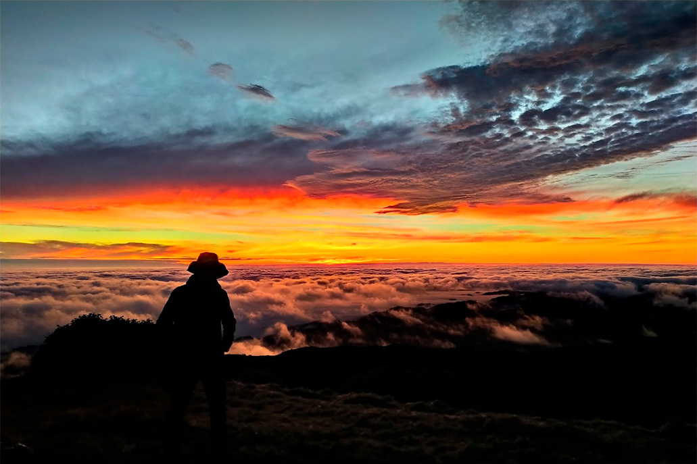

Todas las experiencia preparadas para ti
Muchos turistas hacen la caminata de la montana de 7 colores

La morada de los dioses , lugar con monumentos tallados en piedra haciendo referencia al puma , hombre andino y pachamama , nueva actividad para recorrer

El mirador 3 cruces con los amaneceres mas bellos de todo cuzco , en temporada de junio muchos asisten para ver el fenomeno de Rayo Blanco
La fiesta el Inti Raimi , dedicada al Dios Sol , se celebra en Junio

La Fortaleza de Waqrapukara , belleza arquitectonica y de un paisaje unico , 3 dias de caminata recorriendo los caminos del inca